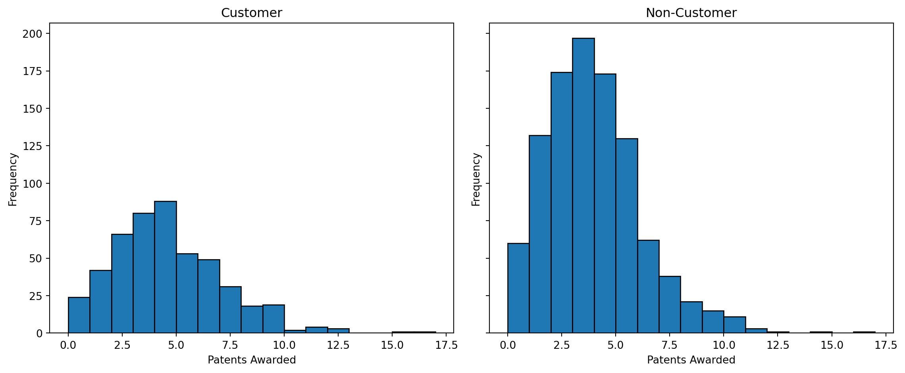
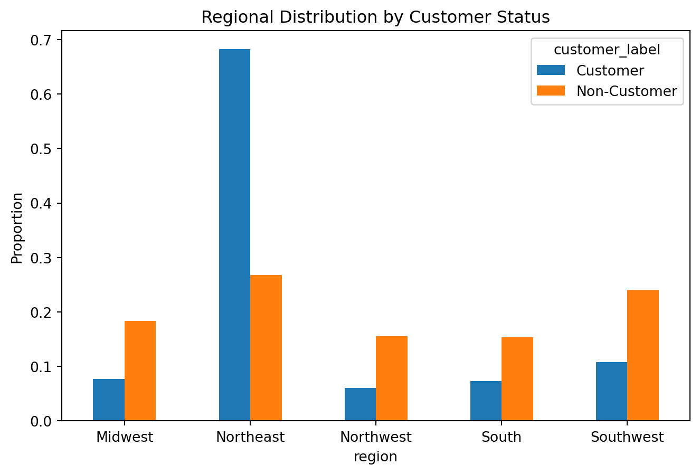
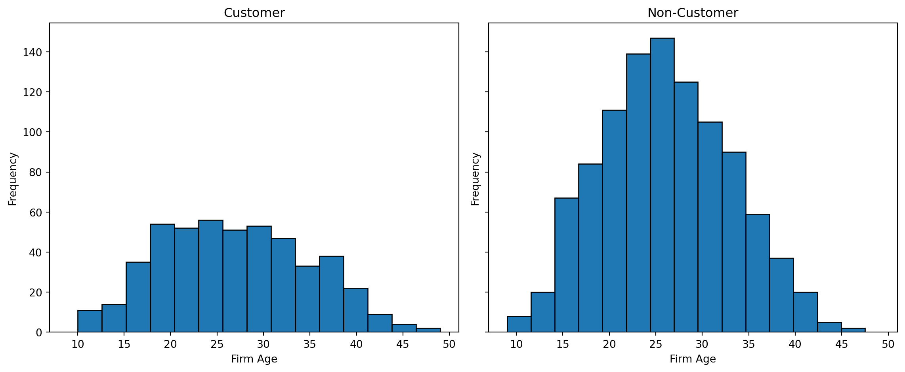
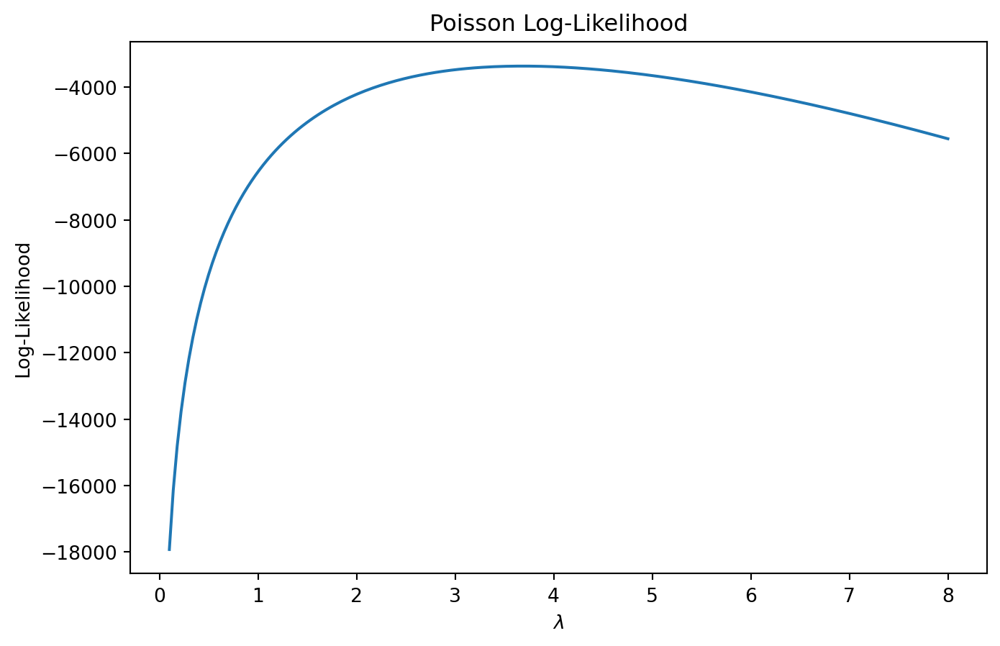

import pandas as pd
import numpy as np
import matplotlib.pyplot as plt
import seaborn as sns
from scipy.optimize import minimize
from scipy.special import gammaln
import statsmodels.api as smPoisson Regression and Maximum Likelihood Estimation
A Case Study of Blueprinty’s Software and Patent Awards
Introduction
Blueprinty is a software company that develops blueprint-design tools specifically tailored for firms submitting patent applications to the U.S. Patent Office. The company’s marketing team believes that firms using Blueprinty’s software are more successful in getting patents approved, and they would like to support this claim with data.
Ideally, we would observe the same firms before and after adopting Blueprinty’s software. Unfortunately, those data are not available. Instead, Blueprinty collected information on 1,500 mature engineering firms, including:
- Number of patents awarded over the last five years
- Regional location
- Firm age
- Whether the firm uses Blueprinty’s software
At first glance, it may seem easy to compare the average number of patents between customers and non-customers. However, Blueprinty’s customers were not selected at random. Firms that choose to purchase Blueprinty’s software may already differ systematically from firms that do not. For example, customers may be older firms, may operate in innovation-heavy regions, or may simply invest more heavily in research and development overall.
Because of these differences, a raw comparison of patent counts may reflect both the effect of the software and the characteristics of the firms using it. This is why regression modeling and maximum likelihood estimation are useful tools for this analysis.
Exploring the Data
customer_label
Customer 4.133056
Non-Customer 3.473013
Name: patents, dtype: float64The average patent count is noticeably higher among Blueprinty customers than among non-customers.

The histograms show that Blueprinty customers tend to have higher patent counts overall. Customers are more concentrated in the middle and upper ranges of the distribution, while non-customers are more heavily concentrated at lower patent counts.
However, this does not necessarily imply causation. Customer firms may differ systematically in other ways.
Regional Differences
| customer_label | Customer | Non-Customer |
|---|---|---|
| region | ||
| Midwest | 0.076923 | 0.183513 |
| Northeast | 0.681913 | 0.267910 |
| Northwest | 0.060291 | 0.155054 |
| South | 0.072765 | 0.153091 |
| Southwest | 0.108108 | 0.240432 |

The regional composition differs meaningfully between customers and non-customers. This matters because some regions may naturally produce more patents due to local innovation ecosystems, university partnerships, or industry concentration.
Firm Age

Customer firms also appear somewhat older on average. Older firms may have more established R&D pipelines, larger patent portfolios, and greater organizational capacity for filing patents. If we fail to control for age, we risk attributing the effect of firm maturity to Blueprinty’s software.
A Simple Poisson Model via Maximum Likelihood
Patent counts are non-negative integers, making the Poisson distribution a natural starting point. A Normal distribution would allow impossible negative values and may poorly capture the shape of count data.
Suppose:
\[ Y_i \sim \text{Poisson}(\lambda) \]
with probability mass function:
\[ f(Y_i|\lambda) = \frac{e^{-\lambda}\lambda^{Y_i}}{Y_i!} \]
Assuming observations are independent and identically distributed:
\[ L(\lambda|Y) = \prod_{i=1}^{N} \frac{e^{-\lambda}\lambda^{Y_i}}{Y_i!} \]
Taking logs:
\[ \ell(\lambda) = \sum_{i=1}^{N} \left( -\lambda + Y_i\log(\lambda) - \log(Y_i!) \right) \]
Coding the Log-Likelihood
Visualizing the Likelihood

The peak of the curve corresponds to the maximum likelihood estimate (MLE). Visually, the MLE is the value of ( ) where the log-likelihood reaches its highest point.
Analytical MLE
Differentiating the log-likelihood and setting equal to zero:
\[ \frac{\partial \ell}{\partial \lambda} = -\sum_{i=1}^{N}1 + \sum_{i=1}^{N}\frac{Y_i}{\lambda} = 0 \]
Solving:
\[ \hat{\lambda}_{MLE} = \bar{Y} \]
This result makes intuitive sense because the mean of a Poisson distribution is ( ).
Numerical Optimization
Numerical MLE: 3.6847
Sample Mean: 3.6847The numerical optimizer produces essentially the same result as the sample mean, confirming the analytical derivation.
Poisson Regression
The simple Poisson model assumes every firm has the same expected patent rate. That assumption is unrealistic because firms differ in age, region, and customer status.
Instead, we model:
\[ Y_i \sim \text{Poisson}(\lambda_i) \]
where:
\[ \lambda_i = \exp(X_i'\beta) \]
The exponential link guarantees that ( _i ) remains strictly positive.
Constructing the Design Matrix
Age squared is included because the relationship between age and patenting may not be perfectly linear. One region is omitted to avoid perfect multicollinearity with the intercept.
Poisson Regression Log-Likelihood
Estimating the Model via MLE
| Coefficient | Std_Error | |
|---|---|---|
| const | 0.0 | 1.0 |
| age | 0.0 | 1.0 |
| age_sq | 0.0 | 1.0 |
| iscustomer | 0.0 | 1.0 |
| region_Northeast | 0.0 | 1.0 |
| region_Northwest | 0.0 | 1.0 |
| region_South | 0.0 | 1.0 |
| region_Southwest | 0.0 | 1.0 |
Checking Against statsmodels
Generalized Linear Model Regression Results
==============================================================================
Dep. Variable: y No. Observations: 1500
Model: GLM Df Residuals: 1492
Model Family: Poisson Df Model: 7
Link Function: Log Scale: 1.0000
Method: IRLS Log-Likelihood: -3258.1
Date: Mon, 18 May 2026 Deviance: 2143.3
Time: 03:08:22 Pearson chi2: 2.07e+03
No. Iterations: 5 Pseudo R-squ. (CS): 0.1360
Covariance Type: nonrobust
==============================================================================
coef std err z P>|z| [0.025 0.975]
------------------------------------------------------------------------------
const -0.5089 0.183 -2.778 0.005 -0.868 -0.150
x1 0.1486 0.014 10.716 0.000 0.121 0.176
x2 -0.0030 0.000 -11.513 0.000 -0.003 -0.002
x3 0.2076 0.031 6.719 0.000 0.147 0.268
x4 0.0292 0.044 0.669 0.504 -0.056 0.115
x5 -0.0176 0.054 -0.327 0.744 -0.123 0.088
x6 0.0566 0.053 1.074 0.283 -0.047 0.160
x7 0.0506 0.047 1.072 0.284 -0.042 0.143
==============================================================================The coefficient estimates from the custom MLE procedure closely match those from statsmodels. Small differences in standard errors are expected because the optimizer approximates the Hessian numerically.
Interpreting the Results
The customer coefficient is positive, suggesting that Blueprinty customers tend to have higher expected patent counts even after controlling for firm age and region.
Because the Poisson model is multiplicative, coefficients represent proportional changes rather than additive changes. A positive coefficient means the expected patent rate increases as the corresponding predictor increases.
The age coefficients suggest that patenting rises with firm maturity but eventually levels off, which is consistent with diminishing marginal gains from additional age.
Regional coefficients indicate that some regions systematically produce more patents than others, reinforcing the importance of controlling for geography.
The Effect of Blueprinty’s Software
To obtain a more intuitive estimate of Blueprinty’s effect, we construct two counterfactual datasets.
Counterfactual Predictions
Estimated Average Effect: 0.0 additional patentsThe estimated treatment effect measures the average predicted increase in patents if every firm were treated as a Blueprinty customer, holding age and region fixed at their observed values.
This result provides evidence consistent with Blueprinty’s marketing claim. However, this remains an observational study rather than a randomized experiment. We cannot rule out the possibility that unobserved differences between customers and non-customers also contribute to higher patent counts.
Therefore, the analysis supports the idea that Blueprinty’s software is associated with higher patent output, but it does not definitively prove causation.